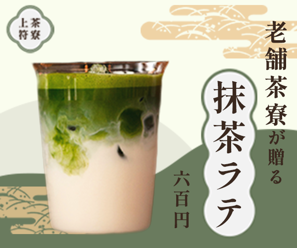

架空の抹茶ラテバナー
- 自主制作
- #バナー

| 概要 | バナーデザイン練習 10本ノック様より、お題を拝借させていただきました。架空の案件となります。 昔ながらの和菓子が人気の老舗から、若者層の呼び込みのために新たに開発されたアイス抹茶ラテ。 本格的な抹茶を気軽に楽しんでもらいたい。 |
|---|---|
| 目的 | 和菓子の老舗が若者層をターゲットに開発した新商品「アイス抹茶ラテ」の認知拡大と集客促進。 SNSやWeb広告での掲載を想定している。 |
| ターゲット | カフェめぐりが好きで、住んでいる街や通勤路にあるカフェをチェックしている。 カフェでは読書などでゆっくり過ごしたい。 和菓子も好き。 |
| デザイン | 抹茶の上質さと親しみやすさを表現するため、全体の配色は低彩度で落ち着いた 淡いグリーンを基調としました。 明朝体で上品さと和の雰囲気を演出し、背景には雲模様と波形パターンで老舗らしい世界観を表現。 「抹茶ラテ」の文字には丸い装飾を加え、カフェらしい柔らかさをプラスしました。 |
| 制作期間 | 1日 |
| 使用したツール | Photoshop / Illustrator |